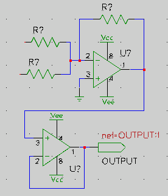
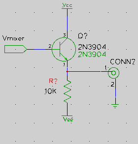
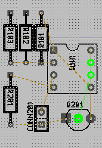

gschem -> gsch2pcb -> PCB
This is a tutorial on the process of using gsch2pcb as an interface between gschem and PCB. It assumes the gEDA, PCB and gsch2pcb packages are already installed and ready to use. Starting with gEDA 20030901, gsch2pcb is packaged with gEDA and doesn’t need to be separately installed. This tutorial is functional and intended to generate results as quickly as possible. It is not a complete reference on gschem or PCB, but it does show with a simple example design all the steps one might need to take.
The goal is to use gsch2pcb as the bridge between gschem and PCB so that the schematics can always be in sync with the PCB layout because all element additions or deletions in the layout will automatically be driven by changes in the schematics. Back annotation from PCB to gschem is currently not possible.
See the release notes for the history of this tutorial.
Terminology
With gschem, you add symbols representing electronic components to a schematic. A symbol is a group of pins, attributes, and lines showing an iconic representation of an electronic component. Pins in symbols are connected to other pins by drawing a net connection between them. Attributes are just named tags attached to symbols to convey some bit of information. For using the schematic with PCB, there are three of these attributes which are relevant and must be specified. Each added symbol should have a footprint, value, and refdes attribute.
The schematic footprint attribute value of a symbol is the name of the PCB element to be placed on the layout for that instance of the symbol. A PCB element is a group of pins, pads, and silk layer outlines physically corresponding to electronic components. It is probably a source of confusion for newcomers to PCB that elements are of two different types. There are the original m4 macro generated PCB elements and since PCB version 1.7 there are also the newlib style file elements. A file element is a single fixed element in a single file. However, many m4 macro element definitions may exist in a single m4 element file. The macros can be given arguments to provide programmable elements of variable number of pins or spacings. Using these two types will be covered in this tutorial and I will be referring to these distinct element types as m4 elements and file elements. When you run PCB, the gschem footprint attribute value will appear as the displayed element name when you select Description from the Screen→Displayed Element Name menu because gsch2pcb uses this field to keep track of which footprint corresponds to a particular PCB element.
The gschem refdes attribute value is the reference designator on the schematic such as Q1, U1, R1, etc. When you run PCB, this refdes will appear as the displayed element name when you select Reference Designator from the Screen→Displayed Element Name menu.
The gschem value attribute value is the particular component value such as BC546, 7400, 1K, etc. When you run PCB, this value will appear as the displayed element name when you select Value from the Screen→Displayed Element Name menu.
Setup
You should have a directory structure in mind for organizing your design projects. The install of gEDA and PCB gives you a set of default gschem symbols and default PCB elements, but you can also provide for creating your own custom libraries of gschem symbols and PCB elements.
- Somewhere, probably under your home directory, create a directory structure for your projects. Use directory names you like, but this tutorial will reference the directory name structure I use:
gaf/ gaf/gschem-sym/ Where I put the custom gschem symbols I create. gaf/gschem-sym/transistors/ You can organize your custom symbols into subdirectories. gaf/pcb-elements/ Where I put the custom PCB file elements I create. These can also be organized into subdirectories. gaf/myproject1/ And finally, separate directories for each gaf/myproject2/ design project. ...
With this organization, any custom gschem symbols and PCB elements you make can be common to all of your projects and this is good enough to get you started. However, I’ll mention other possibilities which will be revealed below: There can be project specific PCB file element subdirectories or m4 element files. Or, CAD administrators can set up site wide custom PCB file element directories and m4 element files.
- gEDA setup (for new versions released >= 2005): the gschem, gnetlist, and other programs you may use such as gattrib, etc, all need to be able to find any custom symbols you will make, so you need to make your custom gschem symbol directories known to these programs in a gEDA gafrc file by adding component-library lines to either a user ${HOME}/gafrc file or a project specific gafrc file in the project directory. There is also a system wide ${GEDADATA}/system-gafrc file administrators can set up. The HOME and GEDADATA environment variables must be respectively set for those gafrc files to be found. For our directory structure setup above, we could add these lines to ${HOME}/gafrc (plus lines for each additional gschem-sym subdirectory you want):
(component-library "${HOME}/gaf/gschem-sym")
(component-library "${HOME}/gaf/gschem-sym/transistors")
or, in each project directory there could be a gafrc file with the lines:
(component-library "../gaf/gschem-sym") (component-library "../gaf/gschem-sym/transistors")
- gEDA setup (for old versions released >= 2004): The gafrc file is not supported. Well, the feature was actually introduced mid 2004, but to get the full functionality described here (relative paths) you really need a 2005 gEDA. Anyway, when using an older gEDA it is necessary to duplicate the component-library setup lines in multiple rc files that apply to the various gEDA programs:
- gschem program setup: create the file ~/.gEDA/gschemrc with this content:
(component-library "${HOME}/gaf/gschem-sym")
(component-library "${HOME}/gaf/gschem-sym/transistors")
- gnetlist program setup: gnetlist will also need to find these symbols so duplicate those lines into ~/.gEDA/gnetlistrc.
- If you want a more detailed customization of gschem and gnetlist, you can override other initializations that are setup in the global rc files. In Debian, look at rc files in /etc/gEDA/ for settings you can make. For example, I like the light gschem background, so I also put in my ~/.gEDA/gschemrc the line:
(load (string-append gedadatarc "/gschem-lightbg")) ; light background
- PCB setup: A PCB distribution usually is set up so that PCB will automatically look in a packages subdirectory of the working directory. So, to make PCB find all the custom elements I put in gaf/pcb-elements I make a link in each of my project directories. Note that this link is actually not required when using gsch2pcb because, as described below, you may alternatively specify the pcb-elements directory in a project file. But if you do want to make the link, in directory gaf/myproject1 enter the command:
ln -s ../pcb-elements packages
- gsch2pcb setup: In each of your project directories, create a gsch2pcb project file which can be named anything that does not end in .sch. A poject file will be created in the example below.
This is all the setup you need beyond the initial install of the gschem, gsch2pcb, and PCB packages.
Simple Example
Let’s generate a trivial design from schematics to PCB layout almost as quickly as possible and then we can use it as a base for doing some more advanced stuff. I’ll complicate it just a bit by making it a two schematic design.
Assuming you setup the directory structure described above, go to the gaf/myproject1 directory and create a file named project with this content:
schematics one.sch two.sch output-name board
Create schematic: one.sch
If you are using gschem for the first time, try stepping through this simple gschem warmup.
 Run gschem one.sch and create this schematic (the second opamp is redundant, but this is just a tutorial):
- Add component title-B.sym from the titleblock library.
- Hit keys ve to zoom to the titleblock extents. Lock the titleblock with the menu Edit→Lock.
- Add components:
- From the analog library three resistor-1.sym and two dual-opamp-1.sym.
- From the io library one output-2.sym.
- From the power library one gnd-1.sym, two vcc-1.sym and two vee-1.sym
- Move components with the middle mouse button and rotate selected components by hitting keys er until everything is placed nicely. Rotate the bottom opamp and mirror it with the ei keys.
- Use the n key and the mouse to draw net connections.
Edit the attributes of the components on the schematic.
 For each component, select it and bring up its attributes window by hitting keys ee. Do not edit the refdes attribute here, but do make these edits:
For each component, select it and bring up its attributes window by hitting keys ee. Do not edit the refdes attribute here, but do make these edits:
- For resistors and the opamps, add visible value attributes and assign appropriate values to them (10K, TL072). Move these newly visible attributes to nice locations with the middle mouse button. Zoom in and repeat clicking the middle mouse button if it is difficult to select them.
- For the resistors, add a footprint attribute and give it the value R025 which is the PCB m4 element for a 1/4 watt resistor. Make this attribute invisible.
- For the opamps, edit the already existing footprint attribute to be DIL 8 300. Yes, include those spaces because DIL is a m4 element that takes two args. We’re telling it to make a dual in line package with 8 pins in a 300 mil package. Edit the slot attribute of the second opamp to be 2. Its I/O pin numbers should change from (1,2,3) to (5,6,7).
- For the output module port, edit its net attribute to be vmixer:1 and make it invisible. Edit its value attribute to be Vmixer.
It may have occurred to you that this editing will be painful for a schematic with a large number of components that don’t have reasonable initial attribute values. At least for the footprints, there are a couple of things that could help. You can create your own library symbols having an initial footprint (and even value) attribute default that covers most of your uses. Or, when you add your first component, edit it to have a good footprint default and then copy it (select it and hit the ec keys) for all remaining components instead of adding them from the library.
Anyway, we’re done for now with one.sch, so save it with the menu File→Save Page and quit gschem.
Create schematic: two.sch
This will be really trivial and stupid since we’re doing it only to demonstrate multiple schematic capability.  Run gschem two.sch:
- Add component title-B.sym as you did in one.sch.
- Add components:
- From the io library one input-2.sym.
- From the analog library one resistor-1.sym.
- From the transistor library one 2N3904-1.sym.
- From the power library one gnd-1.sym, one vcc-1.sym and one vee-1.sym.
- From the connector library one BNC-1.sym.
- Move components and draw nets as before.
- Edit component attributes:
- Input module port: edit net attribute to be invisible and have value vmixer:1 so this net will be connected to the vmixer in one.sch. Make the value attribute be Vmixer.
- Resistor: give it invisible footprint attribute R025 and a visible value attribute 10K.
- Transistor: add value attribute 2N3904 and invisible footprint attribute TO92.
- BNC connector: add invisible footprint attribute CONNECTOR 2 1. which is a m4 element that takes arguments and we’re telling it to make a connector with 2 rows and 1 column. We put a BNC connector on the schematic, but I’m pretending we’ll just jumper wires from this pc board header to a panel mounted connector.
Unfortunately, the 2N3904 symbol we added has the text “2N3904” as an integral part of its symbol. So when we add the value attribute (which we want so the PCB layout will show appropriate values), there are two “2N3904” designations visible on our schematic unless we would make the value attribute invisible. This is not good and for this example we have to live with it, but note that in most cases it’s not a good idea to hardwire information into symbols like this. Also the default device attribute is wrong and should be NPN_TRANSISTOR but it won’t affect this tutorial. This is just to inform you that currently there are some symbols in gschem that carry over outdated attribute usage from older versions of gschem. If you get into running spice on schematics, then your symbols will need to have proper device attributes.
Now we are done with the schematics except for assigning refdes attributes and we can use the command refdes_renum to do this for both schematics at once. So, save two.sch, quit gschem and run:
$ refdes_renum --pgskip one.sch two.sch
Run gschem on the schematics again to see how the components have been given a refdes attribute. The –pgksip option makes numbering begin at 101 for one.sch and at 201 for two.sch. But you should know that running refdes_renum is really only useful for an initial numbering. If you later edit your schematics and add or delete components, there is no guarantee when rerunning refdes_renum that components will keep an existing refdes value. If in the meantime you’ve generated a pc board using gsch2pcb, this reference designator number mixup will put your schematics out of sync with your PCB layout. So, after you initially run refdes_renum and start a PCB layout, to be safe you will need to manually add (unique) refdes attributes for any schematic components you might add. Also note that refdes_renum may number your resistors differently than it did for my examples here depending on the order in which resistors were added. Keep that in mind when comparing your eventual PCB layout to what you see in the images below.
Generate PCB Files from Schematics
We have to fix one thing in one.sch before we can proceed. Run gschem one.sch and notice that refdes_renum has given our opamps refdes values of U101 and U102 and did not know we really want to be using two opamps out of a single TL072 package. That’s why we edited the slot attribute of the second opamp. We have to go back and fix this by editing the refdes attribute of the second opamp to be U101 so both opamps will have the same refdes and there will be only one TL072 package on our pc board.
Now, since we have already set up a gsch2pcb project file, all we need to do to create an initial set of PCB files is to run gsch2pcb:
~/gaf/myproject1$ gsch2pcb project 0 file elements and 7 m4 elements added to board.pcb.
Since the project file specifed board as the output-name, the PCB files created are named board.pcb and board.net.
If you get output from gsch2pcb like: 2 unknown elements added to board.pcb., then run with the -v flag: gsch2pcb -v project and the gsch2pcb output will tell you which schematic components don’t have a known footprint. Either you forgot to add the attribute, the attribute value is wrong, or the PCB element for it is missing from your installation. But if gsch2pcb can’t find any elements and all 7 are unknown, then probably gsch2pcb can’t find your PCB m4 install directory. In this case, look at the first part of the Custom M4 Elements section.
Layout PCB Files
Set the defaults
 Run pcb board.pcb. You’ll see grouped into a big pile the PCB elements for all the schematic component footprints. This is ok, we will clean up this mess later.
Run pcb board.pcb. You’ll see grouped into a big pile the PCB elements for all the schematic component footprints. This is ok, we will clean up this mess later.
When you run PCB on a .pcb file for the first time, you should set up various initial values. I usually set a 25 mil grid spacing with Screen→Grid Setting→25 mil for the bulk of my layout work and then change grid spacing to smaller values as needed for tight layout situations. Note that if you have enabled millimeter units with Screen→Enable millimeter grid units you will see a set of millimeter size options to select from instead of mils in the Screen→Grid Setting menu. You may change between millimeter and mil grid units at any time when doing a layout.
You should also set the default line and via sizes you want for the Signal, Power, Fat, and Skinny drawing route styles. Simply select one of these four route styles at the lower left of the PCB window and then press the Route Style button to edit the sizes. You can set your board size now or wait until later while working on the layout. To change the board size, bring up the File→Preferences window and select the Sizes page. Other design rule checking and increment sizes can also be edited in the Preferences window. You should review PCB documentation for definitions of these items. And you may find it useful to select Screen→Enable visible grid.
Disperse the Components
 Use the middle mouse button to grab and move elements one at a time until you have separated all the elements.
Use the middle mouse button to grab and move elements one at a time until you have separated all the elements.
Or, you can let PCB spread out the elements with Select→Disperse all elements before you fine tune the positions with the middle mouse button.
Load the Netlist

- Go to File→load netlist file and select board.net
- Do Connects→optimize rats-nest. Now, the pins and pads of components should be connected with straight lines according to the schematic. These are “rats”.
To minimize confusion, PCB tries to draw the rats of complex connections such that the sum of all rats is as short as possible. Try to drag an element to the other side of the working area. The rats will follow like a rubber band, but the end of the rats will not jump to a different node, although the resulting length might be shorter. The action optimize rats-nest rats will make the rats jump to this “better” geometry. This action can be applied conviniently anytime with a troke of the the key o.
Place the Components
You will have to replace the rats with traces that can be etched in copper. After “Disperse all elements” the rats are usually in a random mess with lots of crossings. You should move and rotate the components around and try to disentangle the rats as much as possible. The key to a well routed pcb is proper placement of the components. Although PCB tries to clean up the rats lines while you move the components around, it is good practice to occasionly initiate rats optimization with the o-key.
Select the ROT tool (F-9) to move elements with the middle mouse button and rotate them with the left mouse button. The right mouse button will move the viewport to the canvas when zoomed in. Zoom in and out with the mouse wheel or alternatively with z and Shift z. Hit the f key while the mouse hovers over a pin to highlight the particular that touches this pin to help visualize the routes. Use Shift f to unhighlight. You can undo changes anytime with the u key.
Note: you can use the PCB auto placement feature instead of manually placing (or dispersing with the Select→Disperse … commands) the components as described above. To do this, you would load the netlist, select the components you want to be autoplaced (if this is the first PCB run, just <b>Select→Select all objects</b>) then do Select→Auto place selected elements. Then you can again manually tune the PCB generated placements. The auto place function should place elements more intelligently than the disperse function, but it is also much slower as layouts get larger.
Replace rats nests with routes
 At this point you can start routing traces between pins connected by rats nest lines. On the left PCB toolbar, select the LINE tool, select the layer you want to draw on (solder, component, etc), and start drawing lines by selecting endpoints with the left mouse button. Again, it can help to use the f key to highlight routes that need to be connected. If you want to stop the current trace so you can start drawing a new trace somewhere else, finish the current trace with a middle mouse click. Or you can play with auto routing here.
At this point you can start routing traces between pins connected by rats nest lines. On the left PCB toolbar, select the LINE tool, select the layer you want to draw on (solder, component, etc), and start drawing lines by selecting endpoints with the left mouse button. Again, it can help to use the f key to highlight routes that need to be connected. If you want to stop the current trace so you can start drawing a new trace somewhere else, finish the current trace with a middle mouse click. Or you can play with auto routing here.
A very useful operation with the SEL tool is to select multiple objects and then cut or copy them to a buffer with the menu Buffer→Cut selection to buffer (or copy). You can immediately paste the buffer contents or abort the current paste by selecting another tool. The buffer contents can be pasted any time later with Buffer→Paste buffer to layout. With this you can move layout areas around or step and repeat common trace patterns. To select multiple objects with the SEL tool, click and drag to select rectangular regions, and SHIFT click to toggle additional selections to the currently selected set.
When you’ve finished routing the traces (PCB will congratulate you if all traces are routed when you optimze the rats nest) the board can look something like this. For this view I’ve selected Screen→Displayed element name→Value.
You will want more information on using PCB and there is a set of html docs in the PCB source tarball. I don’t know of a link to put here, but you can get the latest tarball from the PCB development site. Or the docs may be installed somewhere on your system. The Debian package has them installed in /usr/share/doc/pcb/html/. PCB also has some convenient “live” documentation that can help you become familiar with keyboard shortcuts or keyboard commands. Bring up the keyboard shortcuts window with the menu Window→Key Reference and you’ll probably find just reading through the shortcuts available will teach you a lot about what you can do with PCB. If you have selected in the File→Preferences window the Use separate window for command entry option, then when you bring up the Command window with Window→Command Entry (or the ':' key), you will see a Command Reference expander arrow. Click on the arrow and a command reference will be shown which lists some commands you can type in that may not be available from the menus or a keyboard shortcut.
For example, say you have in the Preferences→Increments page configured a size increment of 5 mils. With this you can select some lines and then increase their width by 5 mils by selecting from the menu Select→Change size of selected objects→Increment lines by 5 mils. However, suppose you want to be changing widths by random values and it’s inconvenient to be changing the Preferences each time. For this, you can select some lines, bring up the command window (hit ‘:’) and type in the command:
changesize(selectedlines, +3, mils)
and the selected lines will increase by 3 mils. This command is now in a history list which you can recall and quickly edit in the command window to change sizes by other values.
Modifying Schematics
The process of transfering schematic modifications to your PCB layout is made very simple by using gsch2pcb. After the first board.pcb was created when you initially ran gsch2pcb, each time you run gschem on your schematics and make changes, run gsch2pcb project. Then run pcb board.pcb and do whatever is necessary based on the work gsch2pcb has done. Each time gsch2pcb is run, this will happen:
- gsch2pcb always generates a new board.net. If the net was changed, load the new netlist file when you run pcb. *
If you added components (with a footprint attribute) to a schematic gsch2pcb will generate a board.new.pcb containing all the new PCB elements corresponding to the footprints. You then run pcb board.pcb and load the board.new.pcb with new elements into the existing layout with File→load layout data to paste-buffer. Place the new elements, load the new netlist, and route new traces.
- If you deleted components from a schematic, gsch2pcb will delete the corresponding PCB elements from board.pcb. You only need to run pcb board.pcb and clean up dangling traces from around the deleted elements.
- If you change an existing component’s footprint, gsch2pcb will delete the corresponding old element from board.pcb and add the new element to board.new.pcb.
- If you changed schematic component value attributes, the value changes will be forward annotated to board.pcb in place.
So by using gsch2pcb, all PCB element changes are driven by the schematics and you should never need to manually add or delete elements for schematic components.
However, you will need to manually add PCB elements that are not part of the schematics such as pc board mounting holes. For these manually added PCB elements, make sure you never give them a name on PCB name because that is reserved for schematic component refdes attributes and gsch2pcb will want to delete elements which have a non-empty name on PCB and don’t match any schematic component refdes.
Now, so far we’ve only used m4 elements in our layout so let’s modify a schematic to use a file element. But first, it would help to know about the default elements PCB provides. Depending on the location of your PCB install there will be a directory /usr/local/share/pcb/newlib, /usr/share/pcb/newlib, or possibly something else (depending on the prefix specified when PCB was installed). PCB versions before 20031113 used pcb_lib instead of newlib in the locations /usr/local/pcb_lib, or /usr/lib/pcb_lib,. Once you find your newlib directory, look at the file names in each subdirectory. Each file name is a name which may be used as a footprint attribute for a schematic component. For example, there is the file xxx/newlib/2_pin_thru-hole_packages/0.125W_Carbon_Resistor so if we wanted 1/8 watt resistors on our layout, we could use 0.125W_Carbon_Resistor as the resistor footprint attribute instead of R025. Try changing, say resistor R101 to use 0.125W_Carbon_Resistor in one.sch and then run gsch2pcb project. If gsch2pcb does not find this element, then you need to add your newlib directory to your project file with a line like:
elements-dir /usr/lib/newlib
If gsch2pcb does find it, you will get:
~/gaf/myproject1$ gsch2pcb project board.pcb is backed up as board.pcb.bak1. 1 elements deleted from board.pcb. 1 file elements and 0 m4 elements added to board.new.pcb.
Now you need to run pcb board.pcb. You will see that the element for resistor R101 is gone and that you will get the new element by loading board.new.pcb with File→load layout data to paste-buffer.
Custom gschem Symbols
A common way to generate a custom symbol is to start with an existing symbol and modify it. One thing I don’t like about the dual-opamp-1.sym we used is that the power pins are repeated on each symbol. While some will prefer this, I think it makes a page full of opamps look a little cluttered and it presents a good opportunity to learn about net attributes in this tutorial. It’s possible with gschem for symbols to have net attributes which can assign pins to a particular net. Instead of hooking up each opamp pin 8 to Vcc and pin 4 to to Vee on the schematic, we can have that happen automatically and eliminate the pins on the schematic. To do this, just copy the original symbol to our custom gschem symbol directory, giving it a new name, and edit it. Do the steps described below. (Your gEDA symbol install directory may be something different like /usr/local/share/gEDA/sym/):
Make Attributes Visible

cd /usr/share/gEDA/sym/analog/ cp dual-opamp-1.sym ~/gaf/gschem-sym/opamp-dual.sym cd ~/gaf/gschem-sym gschem opamp-dual.sym
- Hit keys en to make attributes visible.
- Hit keys ve to view extents.
- Left mouse click on pin 8 to select it.
Remove the Visible Supply Pins
 * Hit Delete key to delete pin 8.
* Hit Delete key to delete pin 8.
- Similarly select and delete pin 4.
- Double click to select and edit the slotdef lines. Edit them by removing the pins 4 and 8.
Add global Nets to in Numbers
 From the menu Add→Attribute
From the menu Add→Attribute
- Add a net attribute with value Vcc:8 Select Show Name & Value and make it invisible.
- Add a net attribute with value Vee:4 Make it Show Name & Value and invisible.
- Make the device attribute be just OPAMP.
Clean up by moving these new attributes as shown.
Change the footprint default if you wish. When all the edits are done, it’s very important when editing symbols to do a Edit→Symbol Translate to zero before saving. Do that and then save the symbol with File→Save Page I made the footprint default be DIP8 because I have that as a custom element.
Run gschem with the New Symbol
 Run gschem one.sch. Select and delete with the Delete key both opamps. Also delete the Vcc and Vee symbols that were connected to them. Bring up the Add Components window and from the gschem-sym library which should now have your new custom symbol, place two of the opamp-dual.sym Move them to the right place on the schematic and don’t forget to mirror and rotate the bottom opamp as before. Edit the attributes of each opamp giving them the same attributes they had, that is make the footprint be DIL 8 300, add a value attribute of TL072, and make the refdes of both opamps be U101. Make the slot of the second opamp be 2. If you don’t make the attributes the same as they were before, gsch2pcb will think it is a different component and delete the existing DIL package from the layout. If you did everything right, running gsch2pcb should give:
Run gschem one.sch. Select and delete with the Delete key both opamps. Also delete the Vcc and Vee symbols that were connected to them. Bring up the Add Components window and from the gschem-sym library which should now have your new custom symbol, place two of the opamp-dual.sym Move them to the right place on the schematic and don’t forget to mirror and rotate the bottom opamp as before. Edit the attributes of each opamp giving them the same attributes they had, that is make the footprint be DIL 8 300, add a value attribute of TL072, and make the refdes of both opamps be U101. Make the slot of the second opamp be 2. If you don’t make the attributes the same as they were before, gsch2pcb will think it is a different component and delete the existing DIL package from the layout. If you did everything right, running gsch2pcb should give:
~/gaf/myproject1$ gsch2pcb project Found a cpinlist head with a netname! [Vcc] Found a cpinlist head with a netname! [Vee] Found a cpinlist head with a netname! [Vcc] Found a cpinlist head with a netname! [Vee] Found a cpinlist head with a netname! [Vcc] Found a cpinlist head with a netname! [Vee] Found a cpinlist head with a netname! [Vcc] Found a cpinlist head with a netname! [Vee] No elements to add so not creating board.new.pcb
Where the gEDA gnetlist program seems a bit “excited” about finding the new Vcc and Vee net attributes we just added, and a new netlist was generated. Now I think the schematic looks cleaner. And if you run pcb board.pcb and load the new netlist and then optimize the rats nest, PCB should tell you the board is complete which means connecting the opamp power pins via the net attribute has worked.
For complete details on making symbols, read through the Symbol Creation Document on the gEDA Documentation page.
Custom //file elements//
You can create custom file elements in the middle of running PCB on any layout or you can run PCB just for making the element. As a demonstration, lets make a custom element for a 1N4004 diode. There are axial packages provided by PCB, but we want to be sure the drill size will be right for this 1 amp diode with slightly fatter leads. It needs about a 42 mil (#58) drill.
Run pcb and the first thing to do is select the Signal routing style and edit its sizes (press the Route Style button) Set the Via hole size to 42 and the via size to 70 or larger as you like. Select Screen→Grid setting→25 mil and Screen→Enable visible grid. Zoom in a couple of steps, then make the element: 
- Select the VIA tool and place two vias 400 milsapart.
- With the mouse on the left via, hit the n key and give the via the name 1. Give the right via the name 2
- Pin 1 will be the cathode and this must agree with the pin numbers in your diode gschem symbol.

- Select the Silk layer and the LINE tool.
- Draw the component outline as shown with line width set to 10 mils and the grid setting set to 10 mils.
- Draw the left fat cathode indicator with three lines after setting the line width to 20 mils.
- Don’t let silk layer lines overlap solder pads.
Select the vias and the outline just drawn using the SEL tool and finish making the element:
- Buffer→Cut selection to buffer and move the cursor to the center of the left via and click.
- Buffer→Convert buffer to element
- Buffer→Save buffer elements to file and navigate to ~/gaf/pcb-elements and save the element as D400-1A since it’s a package for a 1A diode with 400 mil spaced pins. Or give it any descriptive name you like.
Note: if you save the element with a name which is the same as a m4 element, gsch2pcb will preferentially use the m4 element unless you give gsch2pcb the –use-files (or -f) option. You may put use-files in a project file if you want to always give priority to using file elements. The m4 element names appear to use upper case, so you could also avoid the problem by using lower case in your file element names. Also, the only way I know to make the pin 1 of the symbol square is to edit the D400-1A file manually and change the square flag in the Pin “1” line. For example, change the line:
Pin(0 0 70 20 70 42 "" "1" 0x00000001) to: Pin(0 0 70 20 70 42 "" "1" 0x00000101)
You can now use D400-1A in a gschem schematic symbol footprint attribute and gsch2pcb will find it provided you have made the packages link described in the Setup section. If you have not made that link, you can still tell gsch2pcb about the elements directory with a line in a project file:
elements-dir ~/gaf/pcb-elements
Possibly you’ve noticed, but there are some things not right about the myproject1 example. For one thing, silk layer lines are overlapping solder pads on some of the elements, and for another, the transistor is backwards on the layout! You otherwise shouldn’t have a problem like this when working with gschem and PCB, but transistor pin numbering can be confusing. If you will be using transistors in your designs, here’s a description of my approach to making sure my gschem transistor symbol pin numbering is coordinated with PCB element pin numbers: transistor guide.
From the transistor guide, you can see that the problem here is that the TO92 element has its pins numbered in the less common (3,2,1) configuration while the 2N3904-1.sym is like a npn-ebc symbol which needs a (1,2,3) numbering. You can see the 2N3904 pin numbers in gschem by hitting the en keys (and don’t be confused by the pinseq attribute that nearly covers up the pinnumber). And in PCB, you can see the TO92 pin numbers by hitting the d key with the mouse over the element. To be sure you are seeing pin numbers and not pin names, select Screen→pinout shows number.
I have libraries with transistor symbols and elements that you might find useful, so as a convenience you can get your custom libraries initially populated by installing my gschem/PCB libraries . Untar them under ~/gaf to mirror the setup of our example and there will also be a ~/gaf/pcb-elements.Readme which documents the PCB elements. <i>Note: as of 1/10/2004 I’ve corrected the tarball pcb elements to not overlap solder pads with silk layer lines.</i> If you untar them somewhere else, you will need to make sure that gschem knows about them with gschemrc/gnetlistrc component-library lines and that gsch2pcb can find them with elements-dir lines in a project file.
If you install them, you can fix Q201 in two.sch by changing its footprint to TO-92 which is my custom element with (1,2,3) pin numbering. Then run gsch2pcb project and then pcb board.pcb and load the new element for the transistor. In the next images, two.sch is showing the footprint attribute visible to emphasize it, and it also shows a new symbol for the 2N3904 which I created from my custom npn-ebc.sym as described in my transistor guide. In the updated board.pcb layout, if you compare the outline appearance of the transistor to the original layout you see that the orientation is now correct and that silk layer lines don’t overlap the solder pads. I also changed the footprint attribute for resistors R102 and R103 in one.sch to my custom 1/8 watt R0w8 and 1/4 watt R0w4 elements to illustrate the differences in style you can have with custom elements. You can also see the R101 style after its footprint was changed to 0.125W_Carbon_Resistor as suggested above. As you evaluate the differences in these styles, I’ll mention that for my custom elements I wanted to maximize room to display value and refdes text (the 0.125W… element body could be a little larger) and I wanted the solder pad diameter a little larger so it will be more forgiving of board fabrication technique. Also, the resistor pin spacing for my R0w4 is slightly less than in R025 to improve component density.


Custom //m4 elements// (Requires gsch2pcb >= 1.0)
First, some words about how to find out about the default m4 elements available in PCB. I think there is some documention forthcoming in the PCB project, but at this point I don’t know of anything to refer you to and you can’t just look at filenames as you can for the file elements. Not only that, but many of these elements require arguments and you need to determine what they are. So for now all I can say is that the best way to find out what’s available is to read the m4 element files and for this you need to know where the PCB m4 files install location is. As of PCB 20031113 this install directory will most likely be /usr/share/pcb/m4 or /usr/local/share/pcb/m4, while on earlier PCB versions it could be /usr/X11R6/lib/X11/pcb/m4 (run gsch2pcb –help or gsch2pcb -v project to see which of these directories gsch2pcb is using). But if your install is somewhere else you will have to track it down. By the way, if the m4 directory is somewhere different from the above three, then gsch2pcb won’t be finding your m4 elements in the above examples and you will need to add the correct m4 directory to your project file with a line like:
m4-pcbdir /path/to/pcb/m4
Just read the .inc files in the m4 install directory. For example, in the misc.inc file you will find the R025 element we’ve used and it starts out with:
# ------------------------------------------------------------------- # the definition of a resistor (0.25W) package # $1: canonical name # $2: name on PCB # $3: value define(`PKG_R025', `Element(0x00 "$1" "$2" "$3" 120 30 0 100 0x00) ( ...
The information you can extract from this is that a m4 PKG_ macro named R025 is being defined and it takes 3 arguments. Now, all PCB m4 element macros take at least three arguments and these are automatically filled in by gsch2pcb with the gschem attributes footprint for canonical name, refdes for name on PCB, and value for value. The “canonical name” used in these m4 files is just an older way of referring to the current PCB usage of description as mentioned above in the Terminology section. Since these args are automatically filled in, you don’t need to specify any additional args to R025 when you use it as a gschem footprint. But now look at the very next m4 element define in misc.inc:
# ------------------------------------------------------------------- # the definition of a SIL package without a common pin # $1: canonical name # $2: name on PCB # $3: value # $4: number of pins define(`PKG_SIL', `define(`MAXY', `eval(`$4' * 100 -50)') Element(0x00 "$1" "$2" "$3" 160 10 3 100 0x00) ( ...
From this you can determine there is a SIL package you can use as a footprint. It has 4 arguments, but only the first three are handled automatically so there is one argument you must give when using it. You get a flash of insight and realize this is a “Single In Line” package! So, instead of the CONNECTOR 2 1 element specifying 1 column we used in our example above, you might think we could have used SIL 2. But you would be wrong! Because if you read the macro body you will see that if the argument is 2 the second forloop can’t handle it. In fact, it will only work for arguments >= 4. If you ever run gsch2pcb and it appears stuck in an infinite loop, a m4 macro argument problem is likely the cause. As you look through misc.inc here’s a summary of what you will find as possible elements you can use:
Package Args you need to supply SD 1 number of pins of a ZIP package MULTIWATT15 0 R025 0 SIL 1 number of pins (we know now must be >= 4) CSIL 1 number of pins QFP132 0 LED 1 diameter of LED DIODE_LAY 1 pin separation AXIAL_LAY 1 pin separation CRYSTAL 1 package width OSC 0 ISA8 0 OVEN_OSC 0 RADIAL_CAN 1 SMD_BASE 2 length and width of surface mount device SMD_CHIP 1 package length
And so on for the other .inc files…
The reality is that the m4 setup is less user friendly (you can’t create the elements graphically) and more complicated (you need to understand m4 macros) than the simple file element approach. So for most of your custom elements I suggest you are better off staying with file elements. However, with the m4 macro method a single element definition that takes arguments gives you a programmable element which can be very useful for large pin count packages. It is particularly nice for IC packages with variable widths and number of pins, so a good example of using a custom m4 element would be to copy and modify to our taste the existing m4 macro for IC packages (the DIL macro) into a m4 file gsch2pcb will search. The destination m4 file can be any of these:
- pcb.inc in our myproject1 directory and the custom element will be local to this project.
- ~/.pcb/pcb.inc and the element will be known to all of our projects.
- /path/to/anyfile if this path is made known to gsch2pcb by adding a line to a project file like:
m4-file /path/to/anyfile
Depending on whether you want the file known only to this project, to all of your projects, or to all projects of all users, this line may be added to any of the project files:
~/gaf/myproject1/project ~/.gsch2pcb /usr/local/etc/gsch2pcb /etc/gsch2pcb
For this tutorial, I’ll use the first pcb.inc way, so copy over the existing macro file:
cd /usr/local/share/pcb/m4 (or /usr/share/pcb/m4 or /usr/X11R6/lib/X11/pcb/m4) cp dil.inc ~/gaf/myproject1/pcb.inc cd ~/gaf/myproject1
Now, edit the pcb.inc file you just copied and cut everything out except for the PKG_DIL macro. Change the name of the package to something like PKG_DILFAT because the change we’ll make will be to make larger diameter pins. Actually, we could leave the name alone and our new definition would override the old one, but for now let’s go with the new name. Change the pin diameter from 60 to 70 on the PIN lines. When done, this should be the entire contents of the new pcb.inc file:
# ------------------------------------------------------------------- # the definition of a dual-inline package N and similar types # $1: canonical name # $2: name on PCB # $3: value # $4: number of pins # $5: package size (300, 600, 900 + 100 for socket space) # define(`PKG_DILFAT', `define(`MAXY', `eval(`$4' / 2 * 100)') define(`MAXX', `eval(`$5' + 100)') define(`CENTERX', `eval(MAXX / 2)') Element(0x00 "$1" "$2" "$3" eval(CENTERX + 20) 100 3 100 0x00) ( forloop(`i', 1, eval($4 / 2), `PIN(50, eval(i * 100 -50), 70, 28, i) ') forloop(`i', 1, eval($4 / 2), `PIN(eval(MAXX -50), eval(MAXY - i * 100 +50), 70, 28, eval(i + $4/2)) ') ElementLine(0 0 0 MAXY 10) ElementLine(0 MAXY MAXX MAXY 10) ElementLine(MAXX MAXY MAXX 0 10) ElementLine(0 0 eval(CENTERX - 50) 0 10) ElementLine(eval(CENTERX + 50) 0 MAXX 0 10) ElementArc(CENTERX 0 50 50 0 180 10) Mark(50 50) )')
Run gschem one.sch and edit the footprint attribute of the opamps to be DILFAT 8 300. Then run gsch2pcb project and gsch2pcb will remove the DIL element from board.pcb and add into board.new.pcb a new DILFAT element from your custom m4 file pcb.inc. Run pcb board.pcb and load the board.new.pcb into your layout. Move the new element with its fatter pins to the location left vacant by the removal of the old element.
Multi-user Setup (requires gsch2pcb >= 1.0)
The above examples are oriented towards a single user with projects and custom gschem and PCB libraries under his home directory. Here’s a way to set up for multiple users who need to share resources:
- Put site wide custom PCB file elements under, for example, /usr/local/share/pcb/pcb-elements. Make this directory searched by gsch2pcb for all users by putting a line into /etc/gsch2pcb or /usr/local/etc/gsch2pcb:
elements-dir /usr/local/share/pcb/pcb-elements
If there are any site wide custom PCB m4 element files, for example, /usr/local/share/pcb/pcb.inc, add another line into /etc/gsch2pcb or /usr/local/etc/gsch2pcb:
m4-file /usr/local/share/pcb/pcb.inc
- If the default PCB m4 install is not /usr/local/share/pcb/m4, /usr/share/pcb/m4, or /usr/X11R6/lib/X11/pcb/m4, then make the install location known to all users of gsch2pcb by putting into /etc/gsch2pcb or /usr/local/etc/gsch2pcb the line:
m4-pcbdir /path/to/pcb/m4
If the m4 program is gm4 instead of m4, add to the gsch2pcb file:
m4-command gm4
- If there are site wide custom gschem symbols under some directory, you will have to edit the system gschemrc and gnetlistrc files and add component-library lines for them.
With the above, users will have access to site wide libraries and only need to put in a design project file lines for schematics and output-name. But they also are free to have their own additional user and/or project specific symbol and element libraries.
PC Board Fabrication
The tutorial should cover pcb fabrication too.